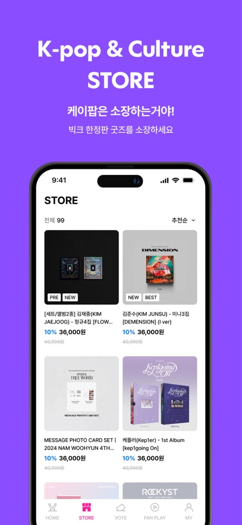
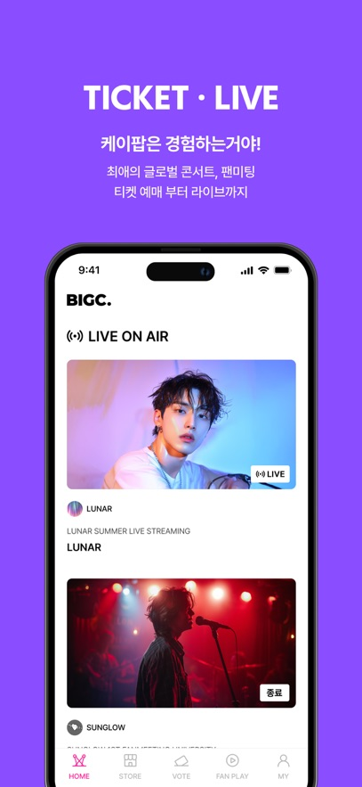

从下载到看第一场打歌直播：BIGC 上手完整实操手册
从零开始带你走完 BIGC 的安装、购票、进房、互动全流程，覆盖新手最容易踩坑的设备限制、网络卡顿和版本对不上问题。
这篇教程结束的时候，你能独立完成 BIGC 应用的安装、买票进直播、在聊天区发弹幕、处理常见的进房卡顿和设备冲突——从听说过BIGC官网、对这个平台一知半解，到能跟上全球粉丝一起看完一场打歌。
准备工作：你需要什么
- 一台手机或平板（安卓或 iOS 都行，双端功能基本对齐）；
- 稳定的网络环境——官方建议观看位置有 20 Mbps 以上带宽，直播对上行很敏感，移动数据信号不稳时别硬撑；
- 一个能正常接收短信验证的手机号或邮箱，用来注册账号。
版本号这块先放一放。你现在手上拿到的安装包可能是 v1.0.96，商店里挂的版本号可能跳到了一百多号，版本号不同不代表装错了——这个应用迭代速度极快，几乎每月发一个新版本，商店和第三方站的收录节奏天然错位，只要包名对得上就没问题。
第一步：获取并安装
安装包从应用商店搜应用名直接装最省心，侧载用户也可以从官方下载拿到最新安装包。侧载党注意两点：包名 im.bigc.lively 不能变，装完去设置里核对版本号和你手头那份安装包的说明是否对得上。

装完第一次打开，应用会引导你走账号注册——邮箱或者手机号二选一。这一步别急着往后点，后面要用到的账号就是你唯一的观看凭证，同一时间只能在一台设备上看直播，多设备共享会互相顶下线。
第二步：找到想看的直播并买票
应用首页顶部有直播入口卡片，开演前会显示"即将开始"的倒计时，开演后切换成 LIVE 角标。点进去就是待购票的场次列表。

选场次的时候建议看下两个东西：一是开票时间，热门打歌节目往往提前一周开票，抢晚了会售罄；二是观看有效期，有些场次的回放窗口只有 7 天，过期就失效。买完票系统会给你一个电子凭证，存在应用内的"我的票夹"里，不用截截图存相册。
第三步：进直播前的三个必做检查
开演前 15 分钟是准备的黄金窗口——这三件事别省：
- 进等待室排队。热门场次开放等待室，先进去占位，开演后自动入场；
- 确认旧设备已退出。你平板后台挂着同账号、手机再登同一个号，后者会被判定"设备占用"直接拒入。彻底退出 = 杀掉应用，不是退到后台；
- 锁好网络。走到离路由器近一点的位置，或者直接切换到移动数据，在等待室里发一条消息测试延迟——高峰期如果发不出去，趁早换网。

第四步：直播中——聊天、投票、调画质
进房之后你会看到三块东西：主画面、实时聊天区、互动入口。聊天区是全球观众同步发言的区域，高峰期滚动极快，发一条自己的应援弹幕是最基本的互动。投票功能也在直播页内直接操作，有些打歌节目把实时投票通道嵌在直播画面旁的侧边栏里。
画面如果卡顿成连环画，先别急着骂平台——按这个顺序排查：
- 降画质。立刻见效，调一档到中档或流畅模式；
- 关后台大流量应用。网盘同步、下载、云盘备份这些会悄悄抢带宽；
- 退出重进。长时间运行的应用偶发内存异常，重进是最快的复位；
- 换网络。无线和移动数据互切一下，快速定位是哪段链路的问题。
这几步只是应急手段，更深层的网络环境调优和播放器设置调整，在BIGC文档里有完整的操作指南。
常见卡点与解法
卡点一：换了新手机，旧手机的账号登不下来
处理方法：旧设备上彻底杀掉应用（不是退后台），再在新设备上登。如果旧手机已经卖了或者丢了，去设置里找"设备管理"手动踢掉旧会话。
卡点二：明明买了票却进不去房
先确认观看期是否已过——有些场次的有效期只有开演后的 7 天。再检查是不是账号密码输错了、或者短信验证码超时没刷新。
卡点三：直播回放只有正片，看不到独家幕后
独家幕后素材进了 FAN PLAY 分区，不在普通回放里。FAN PLAY 是会员付费内容，如果你只买了直播票，这部分单独解锁。
往下还能玩什么
FAN PLAY 里的独家幕后、舞台彩排、艺人花絮是付费会员区的核心内容。另外，平台会不定期举办全球联动打歌活动，参与互动投票积累的积分可以换专属应援物料。
这套资料在三个仓库都能拿到——维护最新版本的GitHub、国内访问更稳的Gitee，还有做同步备份的GitCode，随便选哪个都行，内容一致。